Usuki
Usuki · Oita
Usuki
Highlighted on the Oita map.
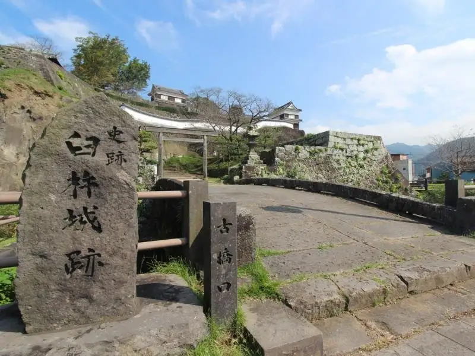
Sights
Kitchomu (Kitchomu) Land
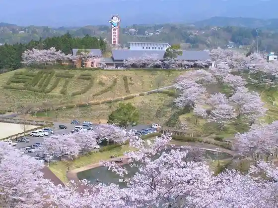
Nogami Yayoiko (no Gamiyaeko) Bungaku Memorial Museum
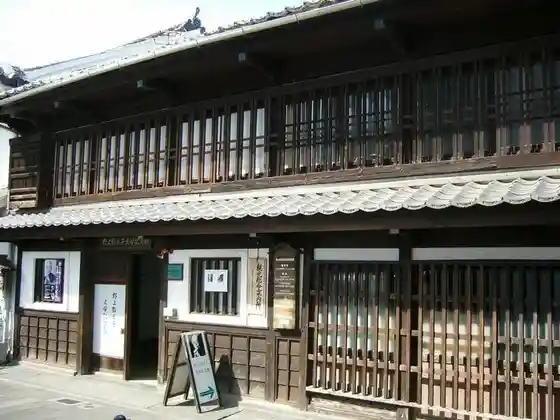
Kuro Shima
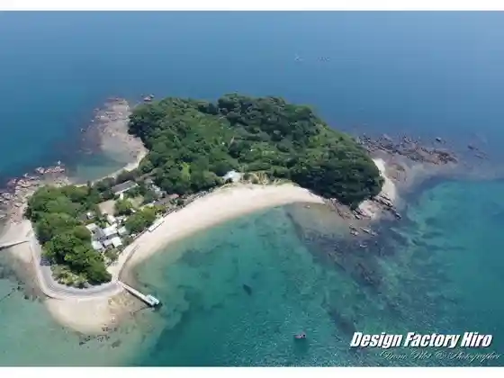
Usuki Castle Ruins (Usuki Park)
Sashi Kiji Ku Kyuko Chi
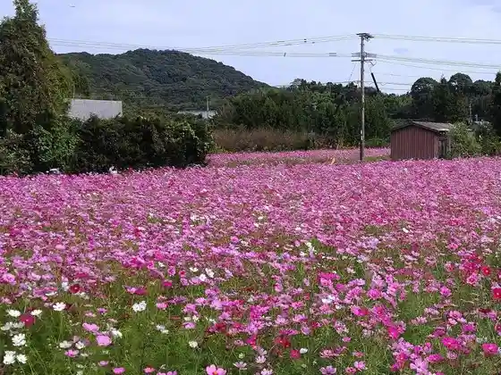
Kotegawa Shoten
Fugen Tera
Kyu Marumo (Kyumarumo) Ie Residence
Usuki Sarayama
Goto Seika Main Shop (Sekibutsu Hall)
Yoshimaru Kazumasa Memorial Museum Soshunfu no Kan
Usuki Kantorii Club
Fugu Ryori Senmonten
Kokuho Usuki Sekibutsu (Usukisekibutsu)
Inaba Ie Shita Residence Kyuhei I Ie House
Usuki History Museum
Hakuba Kei (Hakubakei)
Hoshizuki Iori
Ken Hoshi Zendera
Ryotei Yamada Ya
Kan Seika
Take Ko Sai Gyararii Sai Sa (Chikukosaigyarariisaisa)
Hachi Town Oji (Hatchooji)
Kawaguchi Ya Ryokan Bettei Kuraku
Usuki Fugu no Meiten
Usuki Castle Town
Usuki Sekibutsu Park
Furen Limestone Cave
Sagi Raigasako (Rokugasako) Onsen Gensen Tawaraya Ryokan Koto Shirasagi Kan
Kinmei Moso Take
Poruto Kura
Nio Za Rekishi no Michi
Fukura Tenmangu Shrine
Usuki Yu Village
Sara De Usuki
Kimo no no Ako Ya
Kiraku Iori
Kuge (Kuge) no Okura
Daimon Yagura (Daimonyagura)
Tatsuharu Tera (Ryugenji) Sanjunoto
Sekibutsu Hall
Sekibutsu Kanko Center
Hachi Town Oji (Chuodori Shopping Street)
Kyu Masamitsu Tera
Ishi Kabuto Usuzuka Burial Mound
Kokonoe to
Magai Kurusu
Kitchomu San no Haka
Ishiba Dam
Kirishitan Chika Reihaido
Meiji Hashi (Tekkyo)
Ansei Hashi
Notsu Dam (Kannon Taki)
Usuki Kanko Koryu Plaza
Usuki Yakusho
Dining
ふぐ・日本料理 喜楽庵
Fugu ・ Nihonryouri Kiraku Iori
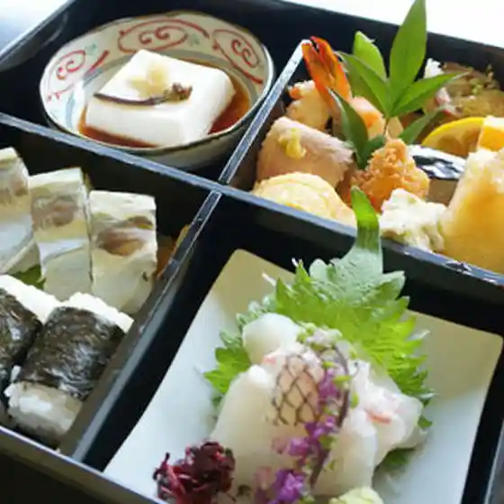
くつろぎ割烹 .馳走
Kutsurogi Kappou . Chisou
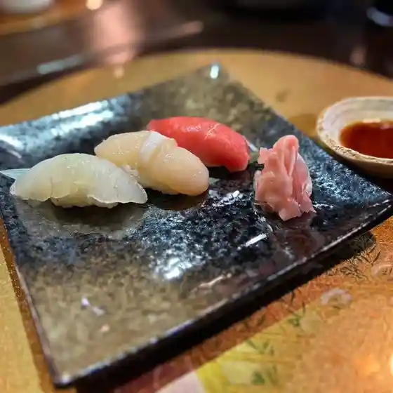
山田屋
Yamada Ya
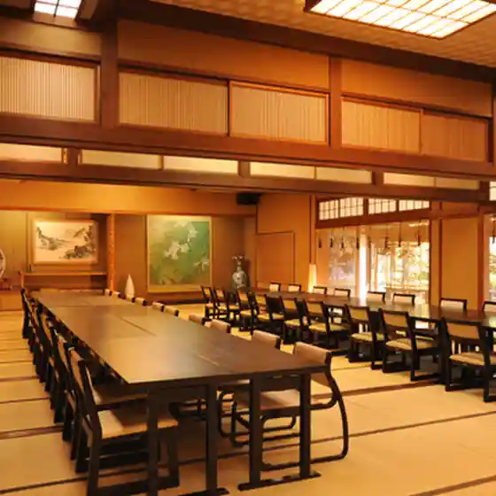
シーホース
Shiihoosu
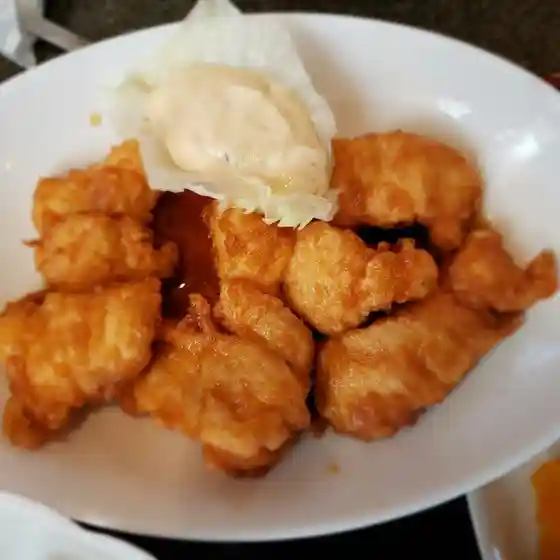
カフェかぎや
Kafe Kagiya
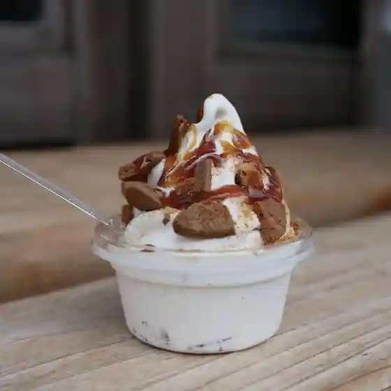
山庵
Yama Iori
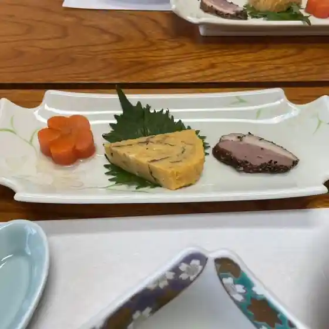
LAWSON 臼杵末広店
Lawson Usuki Suehiro Mise
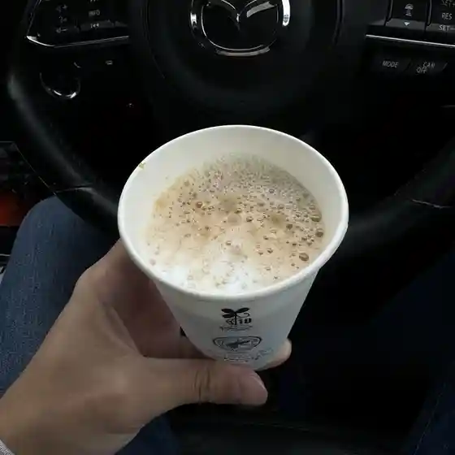
くにみ
Kunimi
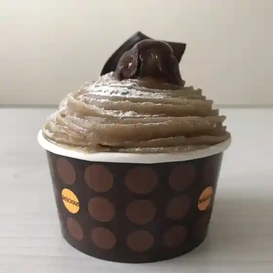
南風
Hae
寛
Hiroshi
ほっともっと 大分臼杵店
Hottomotto Ooita Usuki Mise
星月庵
Hoshizuki Iori
良精堂
Yoshikiyo Dou
白楽天
Hakuraku Ten
からあげ大吉 うすき店
Karaage Daikichi Usuki Mise
うなぎ寿司天ぷら 三重野
Unagi Sushi Tenpura Mieno
エイトドーナツ結
Eitodoonatsu Ketsu
LAWSON 臼杵市役所前店
Lawson Usukishi Yakusho Mae Mise
福々亭
Fukufuku Tei
三共水産
Sankyou Suisan
村上煎餅本舗
Murakami Senbei Honpo
越乃
Etsu No
あづさ家
Azusa Ie
TAVERNA329
Taverna329
甘味茶屋まるや
Amami Chaya Maruya
野口朝日堂
Noguchi Asahi Dou
まりぃずしふぉん
Mariizushifon
祇園食堂
Gion Shokudou
藤居酒造株式会社
Fujii Shuzou Kabushikigaisha
春光園
Shunkou Sono
ウエムラ・ブレッド
Uemura・Bureddo
高島
Takashima
quotidien
Quotidien
灯りCafe
Akari Cafe
カトマンズ
Katomanzu
小手川酒造
Kotegawa Shuzou
一無彩
Ichi Musai
料亭八番
Ryoutei Hachiban
高橋高進堂
Takahashi Koushin Dou
ミカングラ
Mikangura
菓子工房 うさ味の縁側
Kashi Koubou Usa Aji No Engawa
ROUTE 502 COFFEE
Route 502 Coffee
フレンド
Furendo
橋本屋
Hashimoto Ya
福わ内
Fuku Wa Nai
らーめんBANRI 臼杵店
Raamen Banri Usuki Mise
ジョイフル 臼杵インター店
Joifuru Usuki Intaa Mise
ほっともっと 臼杵野田店
Hottomotto Usuki Noda Mise
むぎ饅
Mugi Man
ワンワンドッグダイナー
Wanwandoggudainaa
宵乃ま
Shou No Ma
石窯パン工房 パンロード
Ishigama Pan Koubou Panroodo
百年の春
Hyakunen No Haru
カトマンズ
Katomanzu
みかくと木もれ陽
Mikakuto Ki More You
ジャスマン
Jasuman
京屋
Kyouya
ジョイフル 臼杵店
Joifuru Usuki Mise
敦煌
Tonkou
カフェ デリカッテ
Kafe Derikatte
Kyozen Usami Usuki Oita Prefecture Kyushu
Kyozen Usami Usuki Oita Prefecture Kyushu
Kyozen Usami Usuki Oita Prefecture Kyushu
Kyozen Usami Usuki Oita Prefecture Kyushu
Kyozen Usami Usuki Oita Prefecture Kyushu
Kyozen Usami Usuki Oita Prefecture Kyushu
Kyozen Usami Usuki Oita Prefecture Kyushu
Kyozen Usami Usuki Oita Prefecture Kyushu
Kotegawa Shoten Usuki Oita Prefecture Kyushu
Kotegawa Shoten Usuki Oita Prefecture Kyushu
Kotegawa Shoten Usuki Oita Prefecture Kyushu
Kotegawa Shoten Usuki Oita Prefecture Kyushu
Kotegawa Shoten Usuki Oita Prefecture Kyushu
Kotegawa Shoten Usuki Oita Prefecture Kyushu
Kotegawa Shoten Usuki Oita Prefecture Kyushu
Kotegawa Shoten Usuki Oita Prefecture Kyushu
Seigetsuan Usuki Oita Prefecture Kyushu
Seigetsuan Usuki Oita Prefecture Kyushu
Seigetsuan Usuki Oita Prefecture Kyushu
Seigetsuan Usuki Oita Prefecture Kyushu
Seigetsuan Usuki Oita Prefecture Kyushu
Seigetsuan Usuki Oita Prefecture Kyushu
Seigetsuan Usuki Oita Prefecture Kyushu
Seigetsuan Usuki Oita Prefecture Kyushu
Yamadaya Usukihonten Usuki Oita Prefecture Kyushu
Yamadaya Usukihonten Usuki Oita Prefecture Kyushu
Yamadaya Usukihonten Usuki Oita Prefecture Kyushu
Yamadaya Usukihonten Usuki Oita Prefecture Kyushu
Yamadaya Usukihonten Usuki Oita Prefecture Kyushu
Yamadaya Usukihonten Usuki Oita Prefecture Kyushu
Yamadaya Usukihonten Usuki Oita Prefecture Kyushu
Yamadaya Usukihonten Usuki Oita Prefecture Kyushu
Yufu Usuki Oita Prefecture Kyushu
Yufu Usuki Oita Prefecture Kyushu
Yufu Usuki Oita Prefecture Kyushu
Yufu Usuki Oita Prefecture Kyushu
Yufu Usuki Oita Prefecture Kyushu
Yufu Usuki Oita Prefecture Kyushu
Yufu Usuki Oita Prefecture Kyushu
Yufu Usuki Oita Prefecture Kyushu
Yaoden Usuki Oita Prefecture Kyushu
Yaoden Usuki Oita Prefecture Kyushu
Yaoden Usuki Oita Prefecture Kyushu
Yaoden Usuki Oita Prefecture Kyushu
Yaoden Usuki Oita Prefecture Kyushu
Yaoden Usuki Oita Prefecture Kyushu
Yaoden Usuki Oita Prefecture Kyushu
Yaoden Usuki Oita Prefecture Kyushu
Fukuwauchi Usuki Oita Prefecture Kyushu
Fukuwauchi Usuki Oita Prefecture Kyushu
Fukuwauchi Usuki Oita Prefecture Kyushu
Fukuwauchi Usuki Oita Prefecture Kyushu
Fukuwauchi Usuki Oita Prefecture Kyushu
Fukuwauchi Usuki Oita Prefecture Kyushu
Fukuwauchi Usuki Oita Prefecture Kyushu
Fukuwauchi Usuki Oita Prefecture Kyushu
Spanish Bar Cafe Lamancha Usuki Oita Prefecture Kyushu
Spanish Bar Cafe Lamancha Usuki Oita Prefecture Kyushu
Spanish Bar Cafe Lamancha Usuki Oita Prefecture Kyushu
Spanish Bar Cafe Lamancha Usuki Oita Prefecture Kyushu
Spanish Bar Cafe Lamancha Usuki Oita Prefecture Kyushu
Spanish Bar Cafe Lamancha Usuki Oita Prefecture Kyushu
Spanish Bar Cafe Lamancha Usuki Oita Prefecture Kyushu
Spanish Bar Cafe Lamancha Usuki Oita Prefecture Kyushu
Kirakuan Usuki Oita Prefecture Kyushu
Kirakuan Usuki Oita Prefecture Kyushu
Kirakuan Usuki Oita Prefecture Kyushu
Kirakuan Usuki Oita Prefecture Kyushu
Kirakuan Usuki Oita Prefecture Kyushu
Kirakuan Usuki Oita Prefecture Kyushu
Kirakuan Usuki Oita Prefecture Kyushu
Kirakuan Usuki Oita Prefecture Kyushu
Kagiya Usuki Oita Prefecture Kyushu
Kagiya Usuki Oita Prefecture Kyushu
Kagiya Usuki Oita Prefecture Kyushu
Kagiya Usuki Oita Prefecture Kyushu
Kagiya Usuki Oita Prefecture Kyushu
Kagiya Usuki Oita Prefecture Kyushu
Kagiya Usuki Oita Prefecture Kyushu
Kagiya Usuki Oita Prefecture Kyushu
Stay
料亭旅館 春光園
Ryoutei Ryokan Shunkou Sono
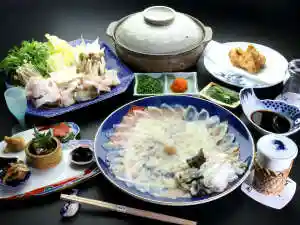
クレドホテル臼杵
Kuredohoteru Usuki
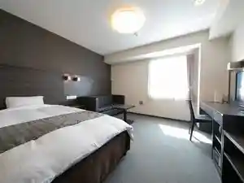
ホテルニューうすき
Hoterunyuu Usuki
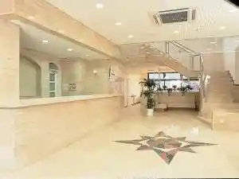
川口屋旅館別亭久楽
Kawaguchi Ya Ryokan Betsu Tei Kuraku
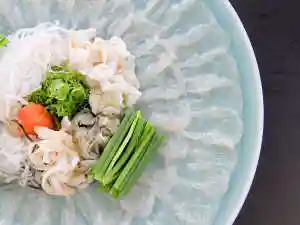
臼杵 湯の里
Usuki Yu No Sato
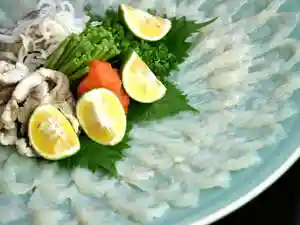
臼杵 鷺来ヶ迫（ろくがさこ）温泉 源泉 俵屋旅館 コト白鷺館
Usuki Sagi Rai Ke Sako ( Rokugasako ) Onsen Gensen Tawaraya Ryokan Koto Shirasagi Kan
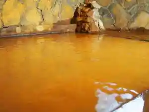
石仏旅館
Sekibutsu Ryokan